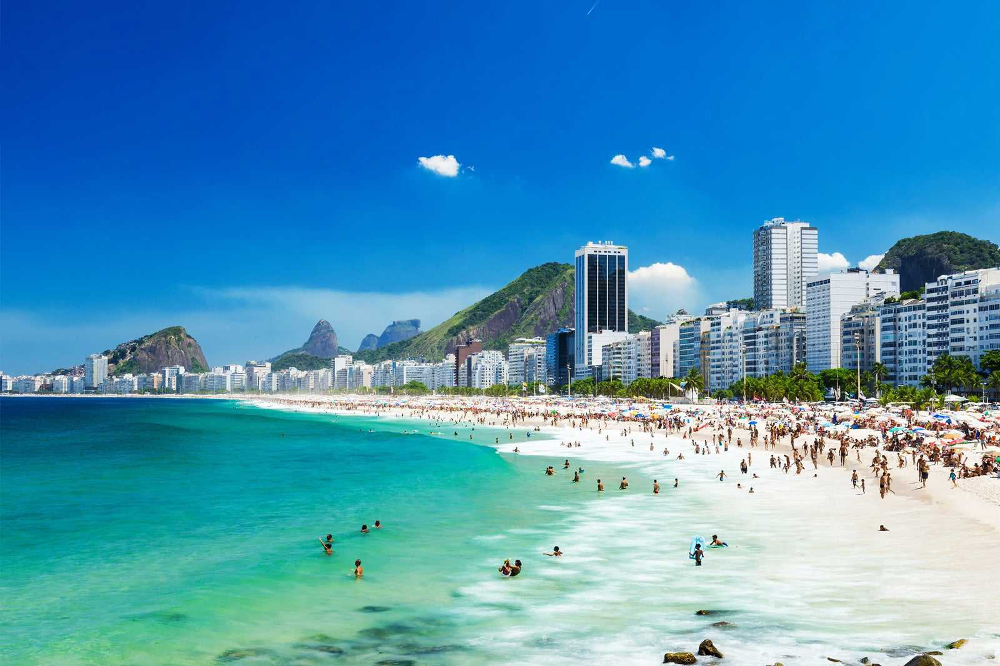
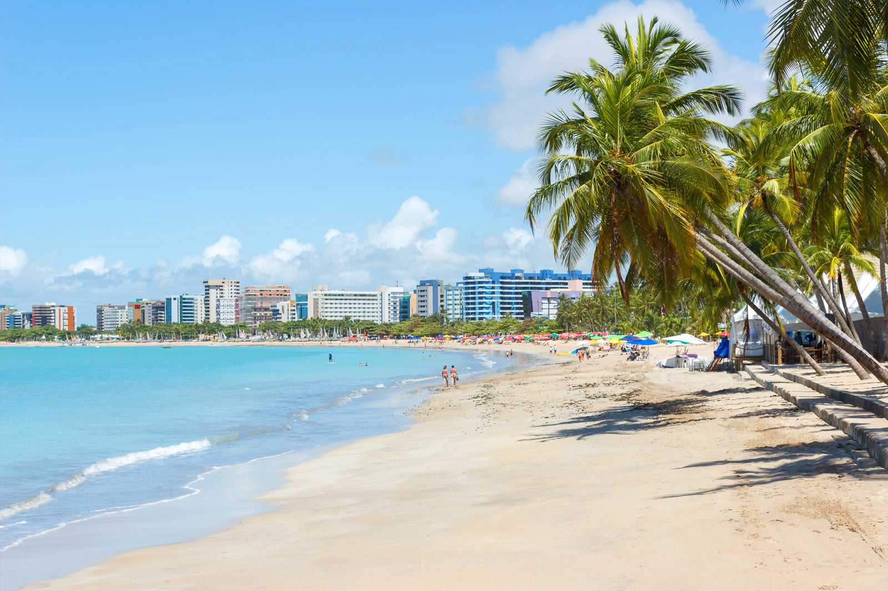
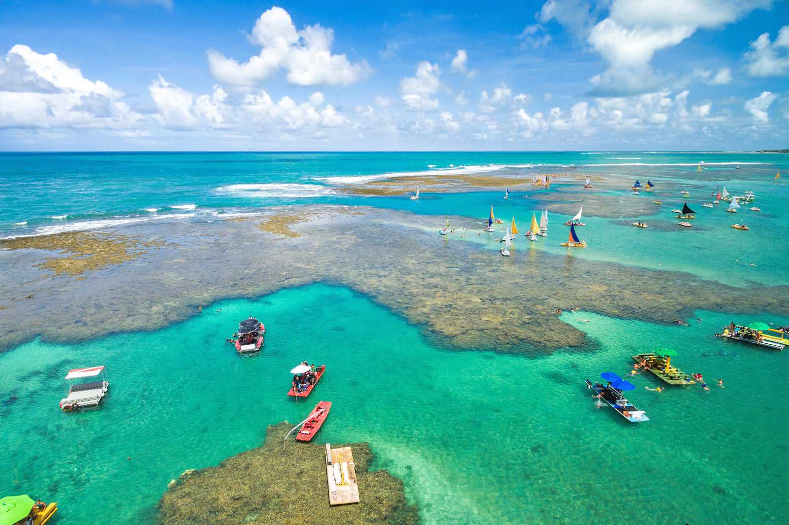
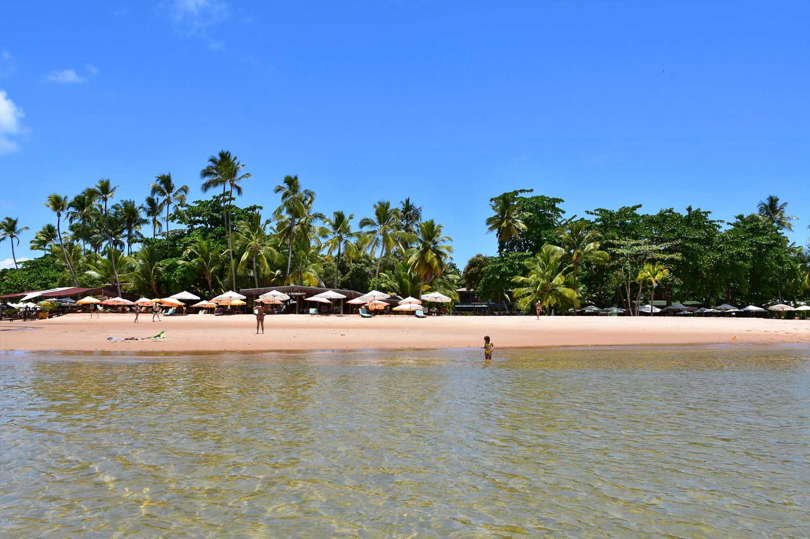
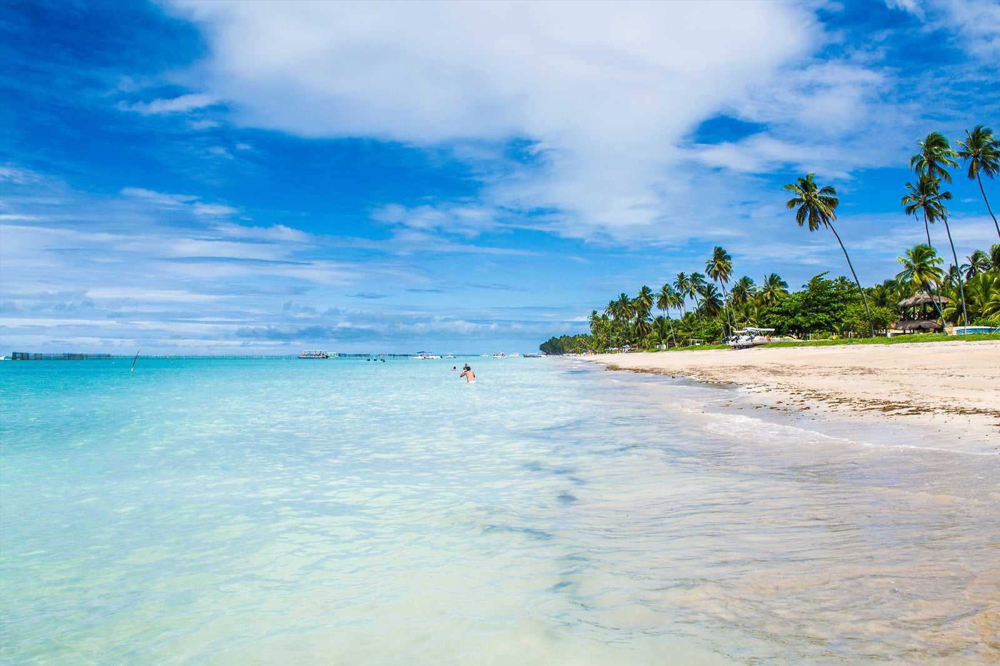

Praias do Brasil
O Brasil é um dos países tropicais conhecidos pelas praias mais bonitas do planeta. Confira as melhores praias para esse verão.
Jericoacoara

Jericoacoara é uma praia localizada na vila homônima, no município de Jijoca de Jericoacoara, no estado do Ceará, no
Brasil. Está localizada a 295 km a oeste da capital do estado, Fortaleza. Foi eleita em 1994 pelo jornal estadunidense
The Washington Post uma das dez praias mais bonitas do planeta.Em 2014, foi eleita pelo Huffington Post a quarta melhor
praia da Terra.É um dos locais mais frequentados por praticantes de windsurfe no país. A praia é parte integrante do
Parque Nacional de Jericoacoara.
Atrações:
- Pedra Furada.
- Duna do Por do Sol.
- Igreja Nossa Senhora da Consolação.
- Serrote.
- Farol de Jericoacoara.
- Campo das Dunas.
Copacabana

Com fama mundial e o litoral em forma de meia-lua, a Princesinha do Mar reina absoluta entre todas as “tribos” de
turistas, dos mais alternativos aos mais tradicionais, passando por adeptos do bronzeado perfeito aos amantes de surfe e
outros esportes radicais. Copacabana combina o melhor da praia e da cidade para acolher tanto residentes como visitantes
com um pouco de tudo: paisagens maravilhosas, areia fofa, um calçadão incrível e toda a infraestrutura dos hotéis,
restaurantes, cafés e bares que acompanham a orla. Além disso, o Coração da Zona Sul ganha um brilho especial no final
do ano, com a queima de fogos do Réveillon carioca, e durante o carnaval.
Atrações:
- Forte de Copacabana.
- Parque Garota de Ipanema.
- Feira de Artesanato de Copacabana.
- Rua Barata Ribeiro.
- Museu Histórico do exército.
- Copacabana Palace.
Ponta-verde

Capital de Alagoas, Maceió é conhecida pelas belezas naturais, com praias de tirar o fôlego de qualquer um. Não é à toa
que está entre os destinos mais cobiçados do país. A Praia de Ponta Verde, na área urbana, é uma das mais descontraídas
de Maceió. O local também chama atenção pela beleza estonteante. Quem gosta de esportes náuticos vai adorar o lugar, que
oferece atividades como prática de stand-up paddle, windsurf e caiaque. Para quem prefere um banho de mar, a área mais
indicada fica entre o Pontal e a Praia de Pajuçara. Outra atração da Praia de Ponta Verde são os quiosques na orla, que
oferecem uma excelente infraestrutura para os clientes, com drinques e música ao vivo.
Atrações:
- Trono De Corais.
- Túnel Farol Da Ponta Verde.
- Marco Dos Corais.
- Farol da Ponta Verde.
- Letreiro "eu Amo Maceió".
- Estátua De Aurélio Buarque De Holanda.
Porto de porto-de-galinhas

Águas verdes mornas, que lembram o Caribe, recife de corais e piscinas naturais formadas pela baixa maré são alguns dos
pontos altos de Porto de Galinhas, a praia mais bonita de Pernambuco e um dos principais destinos com praia do nordeste
e do Brasil. Para aproveitar essas maravilhas e admirar centenas de peixes coloridos, nada melhor que um tradicional
passeio de jangada. Se não quiser contratar uma jangada e o serviço de um jangadeiro, nade ou caminhe pela areia,
dependendo da maré, para chegar às piscinas. Outros esportes aquáticos para curtir em Porto de Galinhas são stand-up
paddle e mergulho.
Atrações:
- Piscinas Naturais de Porto de Galinhas.
- Feira de artesanato.
- Centro de Porto de Galinhas.
- Passeio de buggy.
- Projeto "Hippocampus".
- Praia dos Carneiros e Capela de São Benedito.
Barra grande

Se procura um destino tranquilo e com pouca infraestrutura, mas cheio de belezas e opções de lazer, Barra Grande é o
lugar ideal. Essa vila da Bahia tem encantos que você nem imagina e garante férias surpreendentes. O local é tão pequeno
e pitoresco quanto lindo e cheio de belezas naturais. Formada por pescadores, Barra Grande sempre foi muito simples e em
harmonia com a natureza. É tudo menos entediante. Com praias lindíssimas, áreas para a prática de snorkeling, piscinas
naturais e maravilhosos pores do sol, a vila conta ainda com bares e restaurantes para agradar os turistas mais
exigentes. Também é uma boa pedida para passar as festas de fim de ano e , por que não, o Carnaval.
Atrações:
- Ponta do Mutá.
- Taipu de Fora.
- Igreja de Santo Antônio.
- Farol de Ponta do Mutá.
- Praça da Taínha.
- Praia de Algodões.
Maragogi

Com areias brancas, águas azuis e piscinas naturais, Maragogi é uma das melhores opções para curtir férias tranquilas, a
dois ou em família. Não é à toa que o lugar é conhecido como o Caribe Brasileiro. Para quem gosta de tranquilidade ou
vai viajar com crianças, a Praia de Antunes é a mais disputada da região. Na maré baixa, bancos de areia emergem do mar.
Esse é o melhor momento para explorar as piscinas naturais cheias de peixes coloridos. As águas ficam na altura dos
joelhos e o mar é calmo, ideal para se divertir com as crianças (sempre com a supervisão de adultos, claro). Outras
atividades em Maragogi incluem vela e caiaque ou aventuras de buggy.
Atrações:
- Mirante de Maragogi.
- Coqueiros na orla de Maragogi.
- Caminho de Moisés.
- Letreiro Eu amo Maragogi.
- Piscinas naturais de Maragogi.
- Ruínas da Igreja de São Bento.